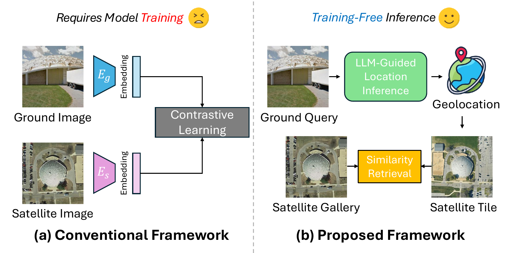
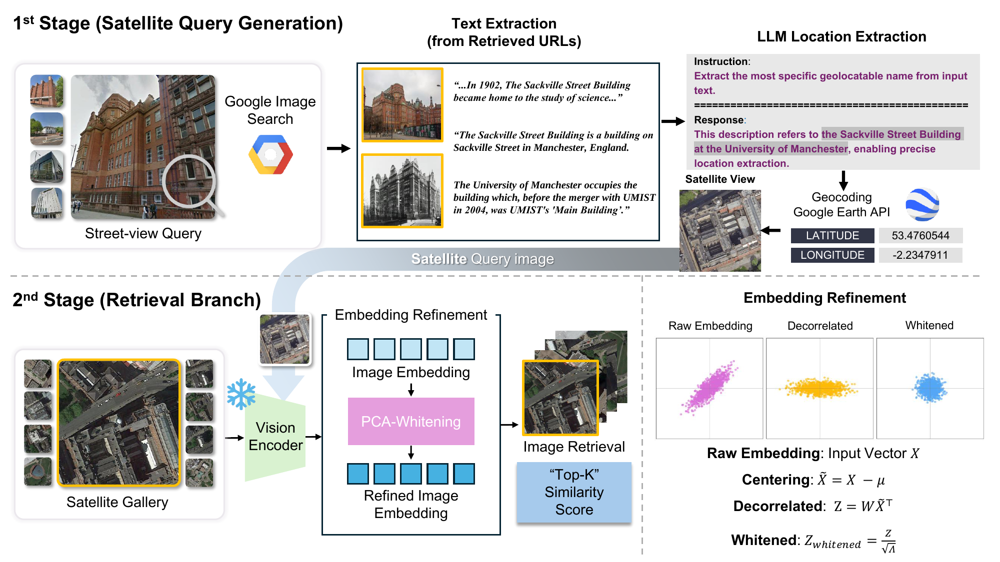
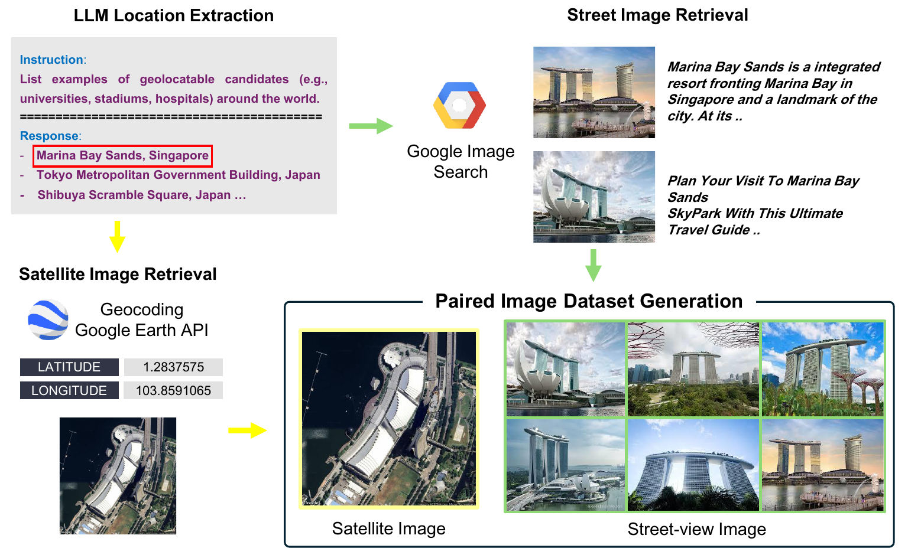
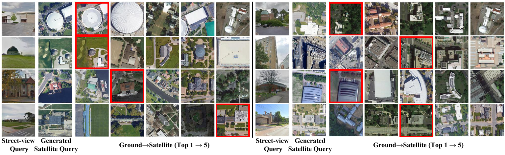

Cross-view image retrieval, particularly street-to-satellite matching, is a critical task for applications such as autonomous navigation, urban planning, and localization in GPS-denied environments. However, existing approaches often require supervised training on curated datasets and rely on panoramic or UAV-based images, which limits real-world deployment.
In this paper, we present a simple yet effective cross-view image retrieval framework that leverages a pretrained vision encoder and a large language model (LLM), requiring no additional training. Given a monocular street-view image, our method extracts geographic cues through web-based image search and LLM-based location inference, generates a satellite query via geocoding API, and retrieves matching tiles using a pretrained vision encoder (e.g., DINOv2) with PCA-based whitening feature refinement.
Despite using no ground-truth supervision or fine-tuning, our proposed method outperforms prior learning-based approaches on benchmark datasets under zero-shot settings. Moreover, our pipeline enables automatic construction of semantically aligned street-to-satellite datasets, offering a scalable and cost-efficient alternative to manual annotation. All source code will be made publicly available at street2orbit.github.io.

Figure: Overall framework for training-free cross-view retrieval.
Our framework consists of three main stages: (1) Satellite query generation via location semantics, (2) Visual embedding and similarity-based retrieval, and (3) Embedding refinement via PCA-based whitening. The entire process is training-free and leverages only pretrained models.
This architecture supports zero-shot generalization and enables scalable construction of street-to-satellite datasets via automated pairing.

Figure: Automatic street-to-satellite pair generation using LLM and web-based APIs.
We evaluate our method on the University-1652 dataset under the Street-to-Satellite setting. Our training-free framework achieves state-of-the-art performance compared to several supervised baselines.
Below are Recall@k metrics for various models:
| Method | Drone | R@1 | R@5 | R@10 | R@1% |
|---|---|---|---|---|---|
| LPN | ✓ | 1.28 | 3.84 | 6.59 | 6.98 |
| PLCD | ✓ | 6.86 | 14.39 | 18.50 | 19.15 |
| Ours (DINOv2-L) | ✗ | 22.84 | 33.48 | 37.93 | 37.64 |
| + PCA Refinement | ✗ | 25.57 | 37.21 | 40.66 | 39.94 |
We show sample top-5 satellite retrievals from our pipeline below:

Figure: Retrieved top-5 satellite tiles for street-view queries.
@inproceedings{min2026street2orbit,
author = {Min, Jeongho and Kim, Dongyoung and Lee, Jaehyup},
title = {From Street to Orbit: Training-Free Cross-View Retrieval via Location Semantics and LLM Guidance},
booktitle = {WACV},
year = {2026},
}